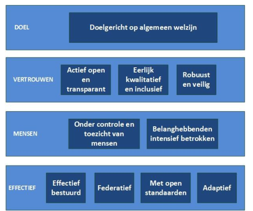
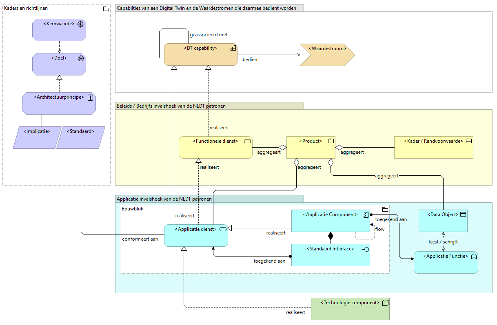
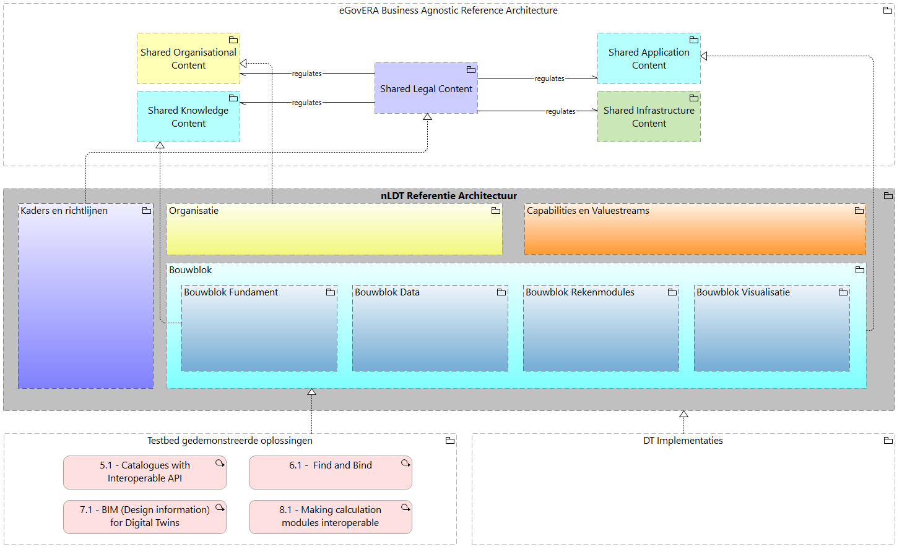
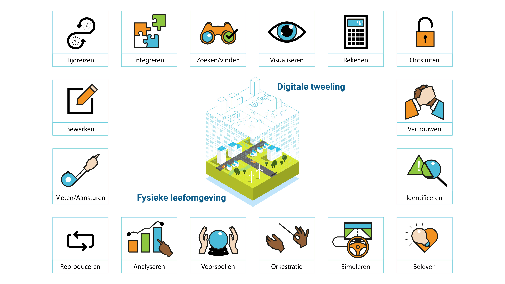
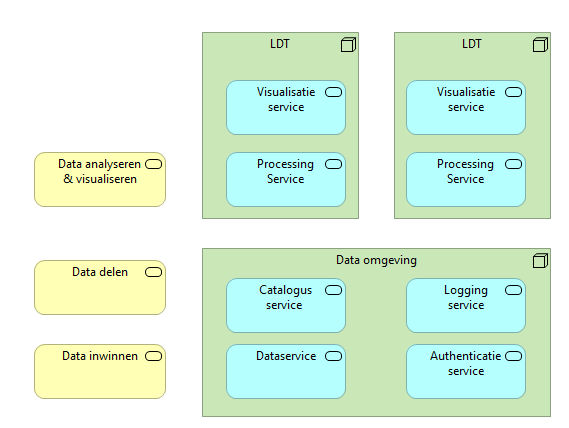
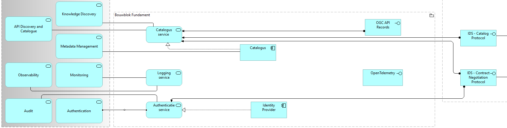
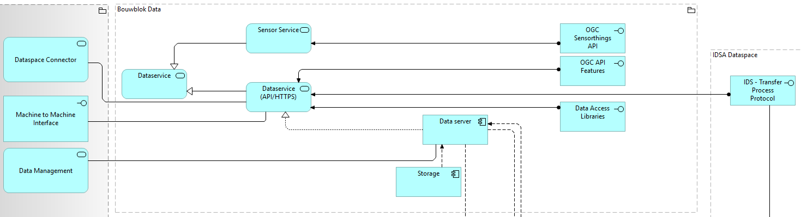
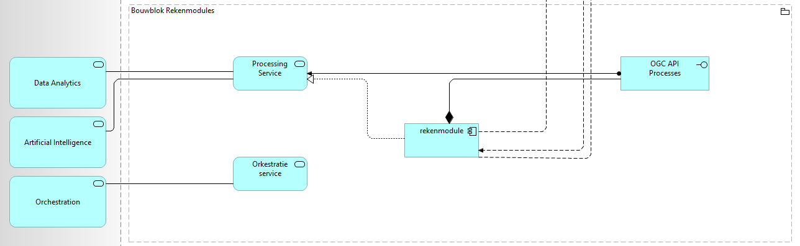
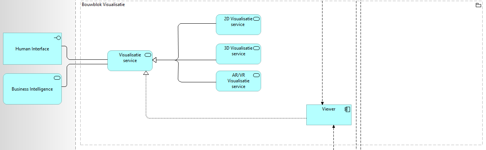
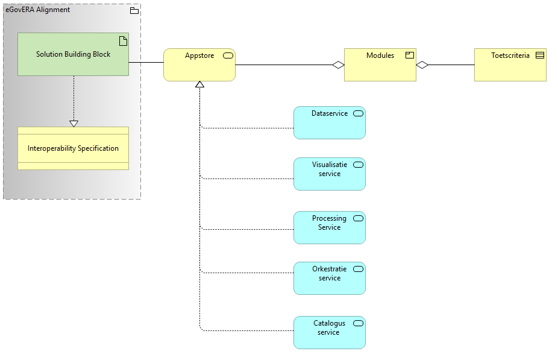

Dit is de definitieve conceptversie van dit document. Wijzigingen naar aanleiding van consultaties zijn doorgevoerd.
1. Inleiding
Deze referentie architectuur bevat afspraken en principes voor een stelsel van digitale tweelingen voor de fysieke leefomgeving. Deze referentie architectuur is bedoeld voor iedereen die een rol speelt bij het tot stand brengen van een digital twin of digitale tweeling voor de fysieke leefomgeving. De afspraken, uitgangspunten , principes en standaarden die in dit document worden gepresenteerd, dragen bij aan het tot stand brengen van een stelsel dat bestaat uit vele toepassingen van het idee van digitale tweelingen.
Dit document bevat een "open" architectuur. Dat wil zeggen: de architectuur kan door iedereen, overheid en bedrijfsleven, toegepast worden. Toepassing van de afspraken, principes en standaarden uit dit document draagt bij aan het tot stand brengen van een "ecosysteem", dat bestaat uit veel te verbinden databronnen en rekenmodellen. Hierdoor wordt het mogelijk om data en modellen uit uiteenlopende sectoren en kennisgebieden met elkaar te verbinden en daarmee twee- of driedimensionale beelden samen te stellen van de fysieke leefomgeving, beleidsvorming te ondersteunen met beslismodellen en simulaties of real time besturingsmogelijkheden voor operationele processen mogelijk te maken.
Het onderwerp Digitale Tweelingen staat volop in de belangstelling, op allerlei vlakken volgen de ontwikkelingen elkaar snel op. Tegen deze achtergrond is deze referentie architectuur opgesteld; zoekend naar zo breed mogelijk gedragen uitgangspunten, principes en standaarden voor het ontwikkelen van digital twins. Zoekend naar een samenhangend pakket van principes en standaarden en daarmee soms ook bepaalde principes en standaarden uitsluitend. De keuzes die in dit document gemaakt worden, kunnen dan ook discussie uitlokken. Dat past bij de fase waarin deze ontwikkeling zich bevindt. Na deze versie zullen dan ook nieuwe versies volgen, die ons weer een stap dichterbij een compleet stelsel voor digital twinning van de fysieke leefomgeving zullen brengen.
1.1 Toepassingsgebied
Deze referentie architectuur beperkt zich tot de fysieke leefomgeving. Daarbij wordt onder meer gedacht aan de gebouwde omgeving, ruimtelijke ordening, verkeersstromen, luchtsamenstelling, geluid, temperatuur, openbaar vervoer, watersystemen en infrastructuren voor energie, data, water, riolering en datacommunicatie.
Binnen dit domein kan digital twinning bijdragen aan het in kaart brengen van de actuele situatie, zoals de plaats en afmetingen van gebouwen, bruggen, tunnels en dergelijke. Of het bijeen brengen van gegevens op basis van metingen van verkeersstromen, fijnstof, geluid of temperatuur. Het kan gaan over statische of dynamische gegevens. Inzet van een digital twin kan onderzoekers en beleidsmakers ondersteunen bij het maken van afwegingen in het ontwerp van aspecten van de fysieke leefomgeving, zoals het ontwerp van nieuwe woonwijken, infrastructuur of het doorrekenen van effecten van maatregelen in het kader van de energietransitie. Digital twinning kan ook een krachtig hulpmiddel zijn bij het dagelijks sturen van processen, zoals verkeersstromen of het opvangen van negatieve gevolgen van voor ons land exeptionele regenval.
Binnen de genoemde domeinen zijn vaak al uitgebreide databestanden en meetgegevens voorhanden. Om gegevens inzichtelijk te maken zijn modellen ontwikkeld. Modellen zijn ook noodzakelijk om "what if" analyses te kunnen doen of simulaties uit te kunnen voeren waarmee betrouwbare voorspellingen kunnen worden gedaan. Er is al veel en er liggen vaak verchillende disciplines en uitgangspunten aan ten grondslag. Digital twinning is te zien als een volgende stap in deze ontwikkeling. Het gaat om het bij elkaar brengen van data en resultaten van modellen om op die wijze een multidimensionaal model van (een deel van) de werkelijkheid samen te stellen. Een voorbeeld: Wat is het effect op de verkeersdoorstroming van een tijdelijke wegafsluiting en wat betekent dit voor de milieubelasting (CO2-uitstoot, geluid) van de alternatieve routes waarvan het verkeer gebruik zal gaan maken en welke aanpassingen in het verkeersbegeleidingssysteem zullen hierbij nodig zijn om een verkeersinfarct te voorkomen? De gecombineerde inzet van rekenmodellen biedt inzicht in dergelijke complexe vraagstukken.
Deze referentie architectuur bevat daarom afspraken, principes en standaarden die relevant zijn voor digital twinning binnen het genoemde gebied.
In dit document volgen we de definitie zoals vermeld in de Kamerbrief van het Ministerie van Volkshuisvesting en Ruimtelijk Ordening:
Een digitale tweeling van de fysieke leefomgeving is een digitale representatie van de stedelijke en landelijke omgeving op basis van data, modellen en visualisaties. Deze kunnen worden gebruikt om verschillende aspecten van de fysieke leefomgeving te simuleren en analyseren. [VRO_2024]
1.2 Doelgroep
Dit document is gericht op iedereen die betrokken is bij het ontwikkelen van vormen van digital twinning binnen het fysieke domein. Dit betreft uiteraard bedrijfs-, informatie-, data- en infrastructuur-architecten, maar ook model- en dataspecialisten, ontwikkelaars, user interface- en beveiligingsexperts en beheerders. Voor personen die iets verder van de techniek afstaan is het hoofdstuk over de kernwaarde in ieder geval van belang en mogelijk delen van de andere hoofdstukken ook. De opbouw van het document gaat van algemeen naar steeds specifieker.
1.3 Opbouw van deze Architectuur
De architectuur beschrijft een aantal kernwaarden waar een Digitale Tweeling voor de fysieke leefomgeving aan zou moeten voldoen in hoofdstuk 2.
Hoofdstuk 3 behandelt de Architectuurprincipes van de NLDT.
Hoofdstuk 4 behandelt de implicaties die volgen uit de architectuurprincipes.
Hoofdstuk 5 introduceert waardestromen en werkt een aantal Capabilities uit die vanuit een functioneel oogpunt beschrijven waar een Digitale Tweeling invulling aan moet geven. Deze Capabilities komen voort uit een eerdere publicatie Beleidsprocessen en bouwblokken voor Digitale Tweelingen [BBDT]
In hoofdstuk 6 worden deze Capabilities vervolgens verder in meer technische bouwblokken uitgewerkt, waarbij vooral naar standaarden en richtlijnen gekeken wordt. De referentie architectuur zal geen specifieke (software) oplossingen voorschrijven, maar zich richten op patronen die interoperabiliteit mogelijk maken.
Hoofdstuk 7 schetst vervolgens nog hoe deze architectuur zich verhoudt tot ontwikkelingen in het bredere speelveld.
2. Kernwaarden
De kernwaarden stellen een aantal randvoorwaarden aan het stelsel van Digitale Tweelingen.
Het gebruik van de term kernwaarde is geinspireerd op de NORA waar een kernwaarde als volgt wordt gepositioneerd:
Noot

Afbeelding 1: kernwaarden
De insteek van de kernwaarden en doelen in deze architectuur is gericht op het inzetten van Digitale Tweelingen in de Fysieke leefomgeving. We onderschrijven de kernwaarden en kwaliteitsdoelen van de NORA, maar richten ons hier specifiek op kernwaarden en doelen vanuit het NLDT perspectief.
De kernwaarden sluiten ook aan op de digitale rechten en principes zoals die beschreven staan in 'EU's Digital Decade 2030'
2.1 Doel
2.1.1 Doelgericht op algemeen welzijn
Digitale tweelingen en het digitale tweeling stelsel dienen objecten, processen en systemen in de fysieke
leefomgeving te verbeteren. Digitale tweelingen zijn nooit het doel, het zijn middelen om het doel mee te
bereiken. Verantwoorde digitale tweelingen dienen het algemeen welzijn en creëren waarde voor de
Nederlandse maatschappij. Zij werken vanuit een helder, enkelvoudig en bovenal gerechtvaardigd doel.
Verklaring: Een rechtvaardig doel is de noodzakelijke eerste stap om alle andere principes goed na te
leven. Het doel bepaalt wie betrokken moet zijn bij de ontwikkeling van de digitale tweeling; welke
data minimaal noodzakelijk zijn; hoe inclusief, volledig en accuraat de data moeten zijn, etc. Digitale
tweelingen kunnen inzichten geven aan bedrijven, overheden, onderwijs en onderzoek, maatschappelijke
organisaties en burgers voor betere planning, ontwikkeling en gebruik van de fysieke leefomgeving, en
tevens het beheer en onderhoud van bestaande objecten, processen en systemen verbeteren.
Toelichting: Het opstellen van een rechtvaardig doel vereist voornamelijk begrip. Begrijp en doorleef de
herkomst, de context, de dynamiek en het perspectief van het doel, de vraag, het probleem. Samen met
eindgebruikers en andere primaire belanghebbenden. Verken of de digital twin de beste weg is om het doel
te bereiken. Zijn er nog andere manieren, alternatieve oplossingsrichtingen (onderzocht) waarlangs de vraag
beantwoord kan worden? Welke behoefte dient de digitale tweeling en het digitale tweeling stelsel en voldoet
de digitale tweeling daaraan?
Digitale tweelingen en het stelsel van digitale tweelingen moeten worden gestructureerd en gedeeld om
samenwerking en innovatie in de economie en maatschappij te bevorderen, in overeenstemming met het
beginsel van het algemeen welzijn. Daarbij staan de behoeften en wensen van de gebruikers van digitale
tweelingen centraal. Algemeen welzijn betekent niet dat digitale tweelingen alleen gefinancierd worden met
publieke middelen vanuit de overheid, maar ook investeringen vraagt van het bedrijfsleven voor
economische ‘waarde creatie’. Digitale tweelingen en het stelsel van digitale tweelingen stimuleren
samenwerking en innovatie in de hele economie en maatschappij ten behoeve van het algemeen welzijn.
2.2 Vertrouwen
2.2.1 Actief open en transparant
Digitale tweelingen en een stelsel van digitale tweelingen moeten zo open mogelijk beschikbaar zijn. Dat wil
zeggen dat ze open of gedeelde data bevatten, die toegankelijk zijn via open standaarden om ervoor te
zorgen dat ze de meeste waarde creëren voor de hele maatschappij. Transparantie is bedoeld om inzicht,
duiding en uitleg te geven. Inzicht in de context en uitvoering van de digitale tweeling en het stelsel, uitleg
over de gemaakte keuzes in het proces, duiding over de data, de modellen, visualisatie(tools) en tijdens
besluitvorming.
We schrijven: “zo open mogelijk” omdat het van belang kan zijn dat deelnemers aan het stelsel ook
informatie delen die niet geschikt is voor een brede, open, verspreiding. Denk hierbij aan privacy- en
veiligheidsbeperkingen. Het stelsel dient ook een vertrouwelijke, afgeschermde informatiedeling mogelijk te
maken.
Verklaring: Een stelsel van digitale tweelingen zal profiteren van netwerkeffecten: hoe meer mensen of
organisaties het stelsel gebruiken, eraan bijdragen en het onderhouden, hoe waardevoller en bruikbaarder
het wordt.
Toelichting: Openheid is een belangrijk element om digitale tweelingen en een ecosysteem van digitale
tweelingen voor Nederland te realiseren en de waarde voor economie en maatschappij te maximaliseren.
Een open, op samenwerking gerichte aanpak zal nodig zijn om te zorgen dat het ecosysteem actueel en
relevant blijft voor een breed scala aan gebruikers, waardoor de kans op silo’s en inefficiëntie wordt
verkleind. Openheid vereist ook dat digitale tweelingen vindbaar en toegankelijk zijn, zodat gebruikersrelevante data,
rekenmodellen en visualisatietools kunnen vinden en gebruiken. Openheid gaat over het toegankelijk,
herbruikbaar en uitwisselbaar maken van data, modellen, visualisatietools en technologieën.
Het gaat niet alleen om de technische toegankelijkheid, maar ook de toegankelijkheid voor de
belanghebbenden: de gebruikers, burgers en andere primaire belanghebbenden. Leg uit en geef toegang
tot de informatie, die belanghebbenden nodig hebben om mee te doen en bij te dragen. Een digitale tweeling
stelsel moet het juiste evenwicht weerspiegelen tussen openheid en (op rollen gebaseerde)
toegangsbeperkingen, dat gebaseerd is op afgesproken beheers mechanismen.
2.2.2 Eerlijk, kwalitatief en inclusief
De betrouwbaarheid van digitale tweelingen of een stelsel van digitale tweelingen is afhankelijk van de
kwaliteit en inclusiviteit van de data, modellen en technologie. De primaire belanghebbenden moeten deze
betrouwbaarheid kunnen beoordelen op aspecten als de relevantie, tijdigheid, nauwkeurigheid, samenhang
en consistentie, interpreteerbaarheid en toegankelijkheid van de digitale tweelingen, in relatie tot het
beoogde gebruik. Kwaliteitsnormen en kwaliteitsniveaus voor data en modellen moeten worden gedefinieerd
en afgesproken om data en modellen te kunnen gebruiken in digitale tweelingen. Het is belangrijk dat de
digital twin en het stelsel niet alleen de technologie, maar ook de onderliggende data en de betrokkenen
voldoende inclusief en integer zijn. Vooringenomenheid (bias), aannames, het bewust of onbewust
bevoordelen of benadelen, onbedoelde discriminatie en profileren van individuen, groepen mensen en
locaties is een steeds aanwezig risico bij het gebruik van digitale tweelingen. De maatschappelijke en
economische waarde door digitale tweelingen moet aan alle belanghebbenden toekomen
Verklaring: Het verstrekken van de juiste, relevante metadata ondersteunt het verantwoorde gebruik
van data en rekenmodellen in digitale tweelingen, waardoor effectieve data-integratie mogelijk wordt om
waarde te creëren. Providers van data en rekenmodellen aan een digitale tweeling stelsel dienen de
kwaliteit van data en rekenmodellen te beoordelen op basis van de functionaliteit, levensduur en
beveiliging, die nodig zijn om het doel te bereiken waarvoor de data en rekenmodellen worden (of zullen
worden) gebruikt.
Een digital twin kan nooit een exacte kopie zijn van de werkelijkheid. Juist om die reden is het belangrijk om
aan te geven waar de grenzen liggen en in welke aspecten juist wel een realistisch beeld wordt geschetst. Een
beeld dat losstaat van vooringenomenheid. Daarbij is het belangrijk om mee te nemen dat zelfs personen
die niet in de digital twin worden gerepresenteerd, geraakt kunnen worden door aannames van
de digital twin of zijn gebruiker.
Toelichting: Het stelsel van digitale tweelingen moet minimum kwaliteitsnormen voor data en
rekenmodellen hanteren. Dit is vooral belangrijk voor gevallen waarin de juiste kwaliteitsnorm moeilijk te
bepalen zijn. Kwaliteitsniveaus moeten transparant, gedefinieerd, meetbaar en beheerd worden binnen het
stelsel van digitale tweelingen. Bij de verzameling, analyse, interpretatie, visualisatie en geautomatiseerde
besluiten van en met data moet gelet en beoordeeld worden op vooringenomenheid om eventuele
onbedoelde effecten te voorkomen, waaronder het ontstaan van onbedoelde discriminatie. Deze
vooringenomenheid geldt niet alleen voor de betrokkenen, die de digital twin ontwikkelen en gebruiken, maar
ook voor de technologie zelf. Technologie is nooit neutraal. Er zijn periodieke controles op
vooringenomenheid (bias) in digitale tweelingen nodig om ervoor te zorgen dat de digitale tweelingen eerlijk
en niet-discriminerend zijn.
2.2.3 Robuust en veilig
Een digitale tweeling en het stelsel van digitale tweelingen dient robuust en veilig te zijn. Dat betekent, dat
data en rekenmodellen en de technische infrastructuur waarop digitale tweelingen draaien een hoge beschikbaarheid
hebben en goed beveiligd zijn (met evt. toegangsbeperkingen) tegen ongewenst gebruik.
Een digitale tweeling mag daarbij alleen de gevoelige informatie (oftewel persoonlijke data) vrijgeven indien voor
die informatie uitdrukkelijk toestemming is verkregen van de betrokkenen en het vrijgeven ook wettelijk is
toegestaan. Een digitale tweeling moet getoetst door onafhankelijke partijen, om blijvend de veiligheid en
gegevensbescherming te kunnen waarborgen.
Verklaring: Data beveiliging en cyber security zijn essentieel om de integriteit van digitale tweelingen en
het stelsel van digitale tweelingen te waarborgen. Een robuuste en veilige benadering zal vertrouwen geven
aan de diverse gebruikers in de integriteit en het gebruik van digitale tweelingen en het stelsel. Dit principe
dient in balans te zijn met de andere principes als openheid en transparantie.
Daarnaast wordt ook een digital twin wettelijk verplicht de privacy van individuen te respecteren. Digitale
tweelingen zijn een goede manier om het ruimtelijk gedrag van een synthetische bevolking in de fysieke
leefomgeving te bestuderen zonder daarbij inbreuk te maken op de privacy van individuen. Daarbij
dienen de ontwikkelaars en gebruikers van de digital twin wel te reflecteren op wat ‘persoonlijke data’ zijn.
De combinatie van verschillende ongevoelige datasets kan er namelijk toe leiden dat gevoelige informatie
over personen wordt onthuld.
Toelichting: Beveiliging in digitale tweelingen kan op meerdere manieren technisch ingevuld worden en is
een balanceer act tussen gebruiksgemak en geboden zekerheden. Maatregelen zijn mogelijk in de
infrastructuur van de data uitwisseling, de gebruikte systemen, procesafspraken rondom digitale
tweelingen en in de gebruikte data en rekenmodellen. Met behulp van het kader van de Baseline voor
Informatiebeveiliging Rijksdienst kan hier concreet invulling aan gegeven worden. De BIR geeft handvaten
die er voor zorg dragen dat data niet-gemanipuleerd (door kwaadwillenden of fouten) van de provider
en bron naar de gebruiker komen. Dat ze alleen komen bij degene die er recht op heeft maar vooral ook dat
die eindgebruiker kan vaststellen dat de data, rekenmodellen en visualisatietools robuust
beschikbaar, betrouwbaar en beveiligd zijn. Pas certificering toe indien mogelijk.
Daarnaast dienen betrokkenen bij het ontwikkelen en gebruiken van digital twins expliciet en heel bewust
toestemming te geven voor het (tijdelijk) verzamelen, koppelen, gebruiken en delen van hun data. Daarbij is
ook van belang dat heel duidelijk wordt gemaakt voor welk specifiek doel zij hun gegevens beschikbaar
stellen. Waarom en hoe juist deze data en de toepassing ervan de voorliggende vraag beantwoorden. Verken
daarbij ook ‘no go areas’ voor de digital twin, ter bescherming van kwetsbare locaties en gemeenschappen.
2.3 Mensen
2.3.1 Onder controle en toezicht van mensen
Een onafhankelijke vertrouwde derde partij moet als toezichthouder de naleving van ethische en andere
relevante afspraken controleren, opdat er verantwoord wordt omgegaan met de digital twin, het stelsel van
digitale tweelingen en de onderliggende data. De digitale tweelingen en het stelsel moeten onder controle en
toezicht zijn van mensen. Toezicht en controle moet plaatsvinden gedurende het ontwikkeltraject en de gebruiksfase
van de digitale tweeling.
Verklaring: De verantwoordelijkheid voor ethiek moet niet bij één persoon, stafafdeling of commissie
liggen. Dat haalt namelijk de verantwoordelijkheid bij anderen weg en uit de interne processen. Het is
daarentegen wel wenselijk dat een onafhankelijke partij toezicht houdt op verschillende onderdelen van de
digitale tweeling en het stelsel. Bijvoorbeeld bij de beoordeling van leveranciers en hun dataproducten.
De ethische codes zijn daarbij een handvat, maar dienen wel iedere keer opnieuw en gedurende het hele
proces met het team te worden doorleefd.
Toelichting: Controle en toezicht moet komen vanuit de mensen: het team. Spreek elkaar aan op de morele
verantwoordelijkheid en naleving van de ethische waarden en afspraken. Vraag uitleg van externe
partijen over hoe zij aan de ethische afspraken gaan voldoen. Een organisatie kan ook verantwoording
afleggen over het gebruik van data en naleving van ethische standaarden in het jaarverslag.
2.3.2 Belanghebbenden intensief betrokken
Voor maatschappelijke opgaven is solidaire betrokkenheid van primaire belanghebbenden
randvoorwaardelijk om te komen tot open, eerlijke en inclusieve beeld-, oordeels-, en besluitvorming. En
randvoorwaardelijk om te komen tot een open, eerlijk en inclusief stelsel van digitale tweelingen. Ook voor
commerciële toepassingen die geen maatschappelijke opgave dienen is de betrokkenheid van primaire
belanghebbenden essentieel. Een duurzame vertrouwensrelatie bevordert de kwaliteit, de vraag naar- en de
adoptie van (data- en informatie) producten. Veruit de belangrijkste betrokkenen zijn de mensen, die hun
persoonlijke data delen én ieder ander die beïnvloed wordt door toepassing van de data en de digital twin.
Het is belangrijk om burgers en andere primaire belanghebbenden al in de ontwerpfase van de digital twin te
betrekken. En ook invloed, zeggenschap te geven als ‘mede-eigenaar’. Laat de bijdragen van primaire
belanghebbenden zwaar wegen.
Verklaring: De aard en omvang van de betrokkenheid van primaire belanghebbenden verschillen per
opgave, per vraagstuk, per opdracht, per product, per situatie. Dit wordt onder meer beïnvloed door: de
impact op mensen; de duur (eenmalig, tijdelijk of structureel); de risico's (privacy, veiligheid, gelijkheid);
de geografische scope (internationaal, landelijk, regionaal, (hyper)lokaal); het domein (publiek, privaat);
het specifieke doel van het datagebruik; de fase van ontwikkeling en realisatie. Dit en dat bepaalt ook de
(werk)vorm waarlangs primaire belanghebbenden betrokken worden. Dat is maatwerk. Vaak wordt de
omgeving pas betrokken bij een project in de testfase: zodra de digital twin al klaar staat voor
gebruik. Feedback wordt dan aangemoedigd en meegenomen, maar dit beperkt de
belangrijkste belanghebbenden tot een reactie op wat er al staat. Dat is geen intensieve, solidaire
betrokkenheid. De kwaliteit van de ethiek hangt af van de kwaliteit van het gesprek met de juiste mensen,
van het stellen en verdiepen van de goede vragen op het juiste moment.
Toelichting: Stel de vraag: Wie zijn de primaire belanghebbenden? Wie is de omgeving? Wie zijn de
betrokkenen? Er zijn verschillende soorten partijen die op verschillende manieren betrokken kunnen
worden. Werk samen met en leer van (maatschappelijke) partijen die hetzelfde doel nastreven. De overheid
is bij maatschappelijke opgaven een belangrijke belanghebbende en vehikel waarlangs burgers bereikt en
betrokken kunnen worden.
2.4 Effectief
2.4.1 Effectief bestuurd
Alle onderdelen van een digital twin en het stelsel van digitale tweelingen hebben een duidelijk en transparant eigendom,
een heldere besturing, belegde verantwoordelijkheden en evt. vastgelegde regelgeving om het creëren, onderhouden en
verantwoord gebruik van relevante data, rekenmodellen en visualisatie(tools) te ondersteunen.
Verklaring: Duidelijk eigenaarschap en belegde verantwoordelijkheden maken effectief gegevensbeheer en
probleemoplossing mogelijk voor een enkele digitale tweeling en binnen het stelsel als geheel.
De overheid zou regelgeving kunnen gebruiken om het gewenste gedrag in een ecosysteem te stimuleren wanneer
dit niet mogelijk is door middel van de samenwerking tussen bedrijfsleven, overheid, onderwijs en onderzoek,
maatschappelijke organisaties en burgers.
Toelichting: Eigendom van data is een centraal element van dit principe en biedt verantwoordelijkheid
voor het samenstellen van geschikte kwaliteitsdata voor integratie in digital twins en het ecosysteem van digital twins.
Data eigenaren en providers moeten samenwerken met belanghebbenden om hoogwaardige datasets te identificeren voor digital twins.
Data eigenaren en providers moeten ook beschikken over de juiste vaardigheden en competenties, die nodig zijn om digital twins
mogelijk te maken. Digital twins kunnen worden bestuurd door het bedrijfsleven, de overheid, onderwijs en onderzoek,
maatschappelijke organisaties en/of burgers. Besturing moet ook voorzien in mechanismen voor het algehele beheer van
het ecosysteem van digital twins, waarbij eerlijke waarde en consistente naleving van standaarden worden gegarandeerd.
2.4.2 Federatief
Eigenaren van (onderdelen van) digital twins moeten een gefedereerd model ondersteunen waar data, modellen, tools en gerelateerde,
ondersteunende diensten op een flexibele en responsieve manier kunnen worden verbonden en gedeeld.
Verklaring: Met een federatief model zullen het bedrijfsleven en alle niveaus van de overheid (nationaal, regionaal en lokaal)
het gezag behouden voor hun respectieve verantwoordelijkheden, hun functies en bijbehorende data, die deel uitmaken van de
nationale digital twin infrastructuur.
Toelichting: Het federatieve model vereist en stimuleert het bedrijfsleven en de overheid om de onderdelen van de digital
twin op consistente, interoperabele, platformonafhankelijke en platformonafhankelijke manieren te ontwikkelen en te beheren.
Met het federatieve model wordt schaalvergroting gestimuleerd en kunnen gebruikers in de gehele economie en maatschappij gebruik
maken van digital twins binnen en tussen toepassingsgebieden, sectoren en rechtsgebieden. Governance is een essentieel onderdeel
van dit principe. Het voorgestelde gefedereerde model vereist een niveau van consistent bestuur over verschillende sectoren heen,
maar ook tussen het bedrijfsleven en de overheid. Governance van het federatieve model moet met name ervoor zorgen, dat digital
twins voor de fysieke leefomgeving kunnen werken met verschillende soorten data(bronnen) binnen en tussen:
verschillende infrastructuur- en toepassingssectoren (bijv. mobiliteit, landbouw, energie, klimaat);
zowel de gebouwde als de natuurlijke omgeving;
verschillende ruimtelijke en temporele schalen;
verschillende modelleringsbenaderingen.
2.4.3 Met open standaarden
We adopteren overeengekomen open standaarden voor data en digital twins, met cross-platform en platform-onafhankelijke
architectuur modellen om overall interoperabiliteit, compatibiliteit en functionaliteit te bieden
Verklaring: Open standaarden voor data en digital twins waarborgen vertrouwen door open en uniforme semantiek en uitwisseling,
voorkomen vendor lock-in, zijn kosten reducerend en zorgen ervoor dat digital twins en het digital twin ecosysteem optimale waarde leveren.
Toelichting: Gebruik van open standaarden zorgt ervoor dat digital twins en het digital twin ecosysteem leverancier-onafhankelijk zijn.
Het gebruik van open standaarden, zoals semantische data modellen en Application Programming Interfaces (APIs), waarborgt brede
toegankelijkheid en uniform gebruik van data en digital twins in economie en maatschappij. Dit principe sluit nauw aan bij de
gemeenschappelijke benadering van de Nederlandse overheid voor het toepassen van open standaarden, die nodig zijn een digital twin ecosysteem
te realiseren. Voor deze (semi-)publieke organisaties is het gebruik van open standaarden de norm. Het College Standaardisatie wijst open
standaarden aan waarvoor een 'comply-or-explain'-regime geldt, de Lijst Open Standaarden voor Pas Toe of Leg Uit.
2.4.4 Adaptief
Digital twins voor de fysieke leefomgeving moeten zich continue kunnen aanpassen en ontwikkelen naarmate de fysieke leefomgeving verandert
en de wereld om ons heen evolueert als gevolg van veranderingen in de samenleving, de technologie, functionele vereisten, het informatiebeheer,
de data science, cyberveiligheid.
Verklaring: Continue aanpassing van digital twins zorgt ervoor, dat digital twins bruikbaar blijven en evolueren om te voldoen
aan de veranderende behoeften van eindgebruikers en op data-gebaseerde planning en besluitvorming mogelijk blijft voor zowel bedrijfsleven,
overheid, onderwijs- en kennisinstellingen, maatschappelijke organisaties en burgers.
Toelichting: Digital twins zullen zich blijven aanpassen en evolueren. Technische oplossingen voor digital twins,
met name platforms en software, zijn onpartijdig om de voortdurende aanpassing en evolutie van digital twins en het nationaal
ecosysteem van digital twins op de lange termijn mogelijk te maken.
3. Architectuurprincipes
3.1 Aansluiten op omliggende kaders
Beschrijving:
De architectuur van het digitale tweeling stelsel is mede gebaseerd op architecturale kaders van de overheid
en de facto kaders zoals gangbaar binnen bedrijven en organisaties.
Rationale:
Het stelsel van Digitale tweelingen bestaat niet in isolatie. Het moet zich verhouden tot de omgeving en de ontwikkelingen
die daar plaatsvinden. Te denken valt hierbij aan de Dataspace ontwikkelingen en de Europese Data- en AI Act.
Beschrijving:
Uitgangspunt is dat organisaties die deelnemen aan het stelsel zelf zorgen voor het aanleggen van databestanden,
dataverwerking en het ter beschikking stellen van data aan derden. Eigenaarschap en verantwoordelijkheid ligt daarmee bij de bron.
Concrete invulling kan eventueel via een service provider gerealiseerd worden.
Rationale:
Bij een federatief stelsel is het beleggen van eigenaarschap en verantwoordelijkheid op de plaats waar die hoort onontbeerlijk.
Alleen als dit in het hele stelsel op een acceptabel niveau geregeld is kan het stelsel als geheel succesvol zijn.
Beschrijving:
Organisaties ontwikkelen op basis van data waarover zij beschikken uitwisselbare dataproducten, die tegen
bepaalde condities (aansluitvoorwaarden) aan andere deelnemers van het stelsel ter beschikking worden
gesteld. Deze dataproducten kunnen de vorm aannemen van operationele data, analytische data, modellen
of een combinatie ervan. Een dataproduct wordt ontwikkeld zodat het vindbaar, begrijpelijk, betrouwbaar,
interoperabel, toegankelijk, beveiligd, adresseerbaar is en publieke waarde heeft. Dit zijn de voorwaarden
voor deelname aan het stelsel. Het dataproduct informeert afnemers ook over onder meer de relevante
context, bruikbaarheid, kwaliteitsaspecten, houdbaarheid en herkomst van de geleverde data. Al deze
informatie is bij het dataproduct zelf aanwezig.
Rationale:
Productdenken schept de voorwaarden voor het uitwisselen van diensten in het stelsel. Het biedt een raamwerk
om op een uniforme wijze te redeneren over niet enkel datasets, maar ook modellen en analytische- of andere diensten.
Dit schept de randvoorwaarden om binnen een stelsel samen te kunnen werken en afspraken met elkaar te kunnen maken.
Beschrijving:
Het stelsel berust op federatieve componenten, waaronder publieke en private datanetwerken,
op cloudtechnologie gebaseerde datacenters, indexen voor het vindbaar maken van
dataproducten en voorzieningen voor identiteits- en toegangscontrole. Via federatieve indexen
kunnen vragende partijen geautomatiseerd door hen gewenste dataproducten vinden.
Het stelsel is zodanig ingericht dat partijen die aan de aansluitvoorwaarden voldoen met hun eigen
componenten deel kunnen nemen.
Rationale:
Een federatief stelsel moet de voorwaarden scheppen voor een gelijk speelveld. Er is geen afhankelijkheid van slechts
één infrastructuur leverancier, maar partijen moeten mee kunnen doen op basis van open standaarden en aansluitvoorwaarden.
Beschrijving:
Het stelsel is gebaseerd op een gefedereerde / gedistribueerde aanpak waar geautomatiseerde governance ingebouwd is.
Dit wil zeggen dat auditing, logging, authenticatie en authorisatie op geautomatiseerde systemen berust.
(En dus niet op een handmatig audit proces dan wel handmatige certificering).
Hiermee kan schaalbaarheid en betrouwbaarheid van het stelsel gerealiseerd worden.
Rationale:
Het huidige digitale ecosysteem is zodanig groot, complex en met elkaar verweven dat handmatige controle niet toereikend is.
Het implementeren van gefedereerde en geautomatiseerde governance vraagt een digitale mindset die nog niet vanzelfsprekend is.
Beschrijving:
De architectuur van het digital twin stelsel is gebaseerd op service oriëntatie.
Deelnemers aan het stelsel wisselen data en modellen uit via het beginsel van de service orientatie.
Dat wil zeggen: Een samenspel van (gestandaardiseerde) vragen en antwoorden via een verbindende infrastructuur.
In praktische zin wordt dit ingevuld met services of API’s.
Rationale:
Het ontkoppelen van de verschillende componenten in het stelsel lukt alleen als het stelsel gerealiseerd wordt met
goed beschreven open en interoperabele interfaces. Door goede gedefinieerde koppelvlakken ontstaat een ecosysteem waar
verschillende partijen interoperabel met elkaar kunnen samenwerken.
Beschrijving:
De architectuur van het digital twin stelsel is maximaal gebaseerd op de toepassing van open standaarden.
Het stelsel staat open voor deelname vanuit overheid en private sector. Federatieve componenten van het stelsel worden via
open standaarden vormgegeven. Daarnaast geldt een sterke aanbeveling voor deelnemende partijen om voor dataproducten eveneens
gebruik te maken van open standaarden, teneinde de interoperabiliteit van het stelsel te maximaliseren.
Rationale:
Open standaarden maken een gelijk speelveld voor de verschillende deelnemende partijen mogelijk.
Beschrijving:
De data-eigenaar bepaalt de gebruiksvoorwaarden van de door hem ter beschikking gestelde data in de gehele keten.
Datasoevereiniteit behandelt hoe gegevens worden uitgewisseld en gedeeld tussen organisaties. Een
gegevenseigenaar bepaalt de gebruiksvoorwaarden van zijn gegevens. Met andere woorden: de dataeigenaar
bepaalt wat de data-afnemer wel en niet mag doen met de geleverde data.
Rationale:
Om waardevolle oplossingen te realiseren zal niet altijd alleen maar open data gebruikt kunnen worden. Het stelsel
moet 'data delen onder voorwaarden' ondersteunen zodat het mogelijk wordt om een rijk pallet aan oplossingen aan te kunnen bieden.
Beschrijving:
Over de door deelnemers aan het stelsel aangeboden data (incl. in de vorm van modellen) kan te allen tijde verantwoording worden
afgelegd over de herkomst, betekenis en kwaliteit van data.
Rationale:
Een stelsel op basis van deze architectuurprincipes leidt tot ketens van combineerbare data.
Daarom is het essentieel dat afnemers van dataproducten nauwkeurige, op veldniveau, informatie krijgen
over zaken als de herkomst van data (data lineage of data provenance), tijdstip van verwerving van data,
betrouwbaarheid van data, geldigheid van data, vertrouwelijkheid van data, gebruikscondities van data en
semantische duiding van data.
Beschrijving:
Het stelsel is gericht op het optimaal en vertrouwd kunnen delen van data. Hiervoor is een raamwerk nodig dat vertrouwen creëert en waarborgt.
Rationale:
In het stelsel zijn de rollen van de deelnemers bekend om te zorgen dat 'data delen onder voorwaarden' plaats kan vinden.
Beschrijving:
Een dataproduct binnen het stelsel van digitale tweelingen moet zichzelf kunnen beschrijven. Dit betekent dat alle relevante informatie over het dataproduct direct beschikbaar is, inclusief de context, bruikbaarheid, kwaliteitsaspecten, houdbaarheid, herkomst (lineage) en semantische duiding van de geleverde data.
Rationale:
Zelfbeschrijvingen zijn cruciaal voor het realiseren van het architectuurprincipe 'Data als product'. Door dataproducten van duidelijke metadata te voorzien, wordt hergebruik gefaciliteerd en de vindbaarheid binnen de zelfservice data-infrastructuur verbeterd. Dit draagt bij aan een open en transparant stelsel (kernwaarde) waarin gebruikers de betrouwbaarheid van data kunnen beoordelen (kernwaarde: eerlijk, kwalitatief en inclusief). De expliciete vermelding van gebruiksvoorwaarden borgt data soevereiniteit. Bovendien versterkt het inzicht in de eigenschappen van data het vertrouwen in het gehele stelsel (kernwaarde).
Beschrijving:
De herkomst en de reis van data binnen het stelsel van digitale tweelingen moet traceerbaar zijn. Dit betekent dat de data lineage of data provenance van een dataproduct bekend moet zijn, inclusief het tijdstip van verwerving en eventuele bewerkingen die de data heeft ondergaan.
Rationale:
Inzicht in de data lineage is essentieel om de verantwoording over de kwaliteit van data te kunnen afleggen (architectuurprincipe: kwaliteit van data is gekend) en het vertrouwen in de betrouwbaarheid van het stelsel te waarborgen (architectuurprincipe: het stelsel is betrouwbaar). Door de herkomst te kennen, kunnen gebruikers de context van de data beter begrijpen en de geschiktheid voor hun specifieke toepassing beoordelen. Dit ondersteunt de kernwaarde van eerlijk, kwalitatief en inclusief door transparantie te bieden over de totstandkoming van data.
Beschrijving:
Er dient een kwaliteitsraamwerk aanwezig te zijn binnen het stelsel van digitale tweelingen dat normen en niveaus voor de kwaliteit van data en modellen definieert en beheert. Dit raamwerk is noodzakelijk om betrouwbare dataproducten te kunnen uitwisselen en om ervoor te zorgen dat gebruikers de kwaliteit van de data kunnen beoordelen op aspecten als relevantie, tijdigheid, nauwkeurigheid, samenhang, consistentie, interpreteerbaarheid en toegankelijkheid.
Rationale:
Dit raamwerk is noodzakelijk om betrouwbare dataproducten uit te wisselen (architectuurprincipe: het stelsel is betrouwbaar) en om ervoor te zorgen dat gebruikers de kwaliteit van de data kunnen beoordelen op aspecten als relevantie, tijdigheid, nauwkeurigheid, samenhang, consistentie, interpreteerbaarheid en toegankelijkheid (architectuurprincipe: kwaliteit van data is gekend). Het draagt bij aan de kernwaarde van eerlijk, kwalitatief en inclusief door duidelijke criteria te bieden voor de beoordeling van data en modellen, wat essentieel is voor verantwoord gebruik van digitale tweelingen (kernwaarde: onder controle en toezicht van mensen).
Beschrijving:
Binnen de architectuur van het digitale tweeling stelsel dient hergebruik van (stelsel)functies en definities te worden gemaximaliseerd. Dit betekent dat er gedacht moet worden vanuit wat er al is in plaats van direct nieuwe oplossingen te ontwikkelen.
Rationale:
Dit bevordert efficiëntie en reduceert kosten door te bouwen op bestaande architecturale kaders (architectuurprincipe: aansluiten op omliggende kaders), open standaarden (architectuurprincipe: open standaarden) en bewezen concepten. Het waarborgt interoperabiliteit en is een direct gevolg van het domein georiënteerd en gedecentraliseerd zijn van het stelsel, waardoor componenten vaker ingezet kunnen worden binnen verschillende domeinen.
Beschrijving:
Bij de ontwikkeling en het aanbieden van dataproducten is het cruciaal om de specifieke context van het domein expliciet te beschrijven. Dit helpt om misverstanden en ambiguïteit te voorkomen, bijvoorbeeld door duidelijk het verschil aan te geven tussen een steiger (vaarweg) en een steiger (bouw).
Rationale:
Dit voorkomt misverstanden en ambiguïteit in een domein georiënteerd, gedecentraliseerd stelsel waarin verschillende vakgebieden samenwerken. Het is van belang bij het architectuurprincipe van data als product om de begrijpelijkheid van dataproducten te waarborgen, zodat afnemers de data correct kunnen interpreteren en gebruiken in hun specifieke context. Dit draagt bij aan de effectiviteit van het stelsel (kernwaarde: effectief bestuurd).
Beschrijving:
Om hergebruik te stimuleren en de waarde van het stelsel te maximaliseren, is het essentieel dat dataproducten gemakkelijk gevonden kunnen worden door andere deelnemers. Alleen wanneer producten vindbaar zijn via bijvoorbeeld federatieve catalogi of indexen kunnen partijen ervoor kiezen om bestaande oplossingen te hergebruiken in plaats van zelf iets nieuws te ontwikkelen.
Rationale:
Dit stimuleert hergebruik en maximaliseert de waarde van het gedecentraliseerde stelsel door het potentieel voor data-integratie te vergroten (capability: integreren). Het is een directe implicatie van een domein georiënteerd, gedecentraliseerd stelsel waarin data en modellen over verschillende organisaties verspreid kunnen zijn en wordt gefaciliteerd door de zelfservice data-infrastructuur componenten. Vindbaarheid is essentieel voor de ontwikkeling van een ecosysteem van digitale tweelingen.
Beschrijving:
De ontwikkeling en het beheer van het digitale tweeling stelsel vereist bewuste keuzes op het gebied van automatisering. Dit omvat overwegingen over wel of geen inzet van AI, maar ook het voldoende op de hoogte zijn van de gebruikte technologie stack, zoals bijvoorbeeld de 'Infrastructure as Code' benadering.
Rationale:
Dit is cruciaal voor het realiseren van gefederdeerde en geautomatiseerde governance wat de schaalbaarheid en betrouwbaarheid van het stelsel ten goede komt (architectuurprincipe: het stelsel is betrouwbaar). Automatisering van auditing, logging, authenticatie en autorisatie is noodzakelijk gezien de omvang en complexiteit van het beoogde digitale ecosysteem. Het draagt bij aan een robuust en veilig stelsel (kernwaarde).
Beschrijving:
De architectuur van het digital twin stelsel is gebaseerd op service oriëntatie, waarbij data en modellen worden uitgewisseld via gestandaardiseerde vragen en antwoorden (API's). Om een optimale integratie en samenwerking binnen het stelsel te waarborgen, is het noodzakelijk om de API Designrules te volgen. Het Kennisplatform API's brengt deze API Designrules uit.
Rationale:
Dit is essentieel om interoperabiliteit te garanderen (architectuurprincipe: open standaarden) en een betrouwbaar stelsel te creëren (architectuurprincipe: het stelsel is betrouwbaar) in een service georiënteerde architectuur (architectuurprincipe: gebaseerd op service oriëntatie). Het faciliteert een flexibele en responsieve manier van verbinden en delen van data, modellen en tools (kernwaarde: federatief) en ondersteunt de uitwisseling van dataproducten binnen de zelfservice data-infrastructuur.
Zoals in de inleiding al beschreven staat volgen we deze definitie van een digitale tweeling:
Een digitale tweeling van de fysieke leefomgeving is een digitale representatie van de stedelijke en landelijke omgeving op basis van data, modellen en visualisaties. Deze kunnen worden gebruikt om verschillende aspecten van de fysieke leefomgeving te simuleren en analyseren. [VRO_2024]
De toepassing van een Digitale Tweeling in de fysieke leefomgeving kan zeer uitlopend zijn. Om enig houvast te geven in de verschillende soorten toepassingen hanteren we de volgende type niveaus van automatisering:
Niveau
Toelichting
Beschrijvend
Verspreidde, statische data in systemen zonder integratie, communicatie of automatisering.
Diagnostisch
Operationele data en sensordata. Dashboard met operationele inzichten.
Voorspellend
Contextuele data, machine learning, gedeeltelijke automatisering, verbonden data en systemen.
Voorschrijvend
Real-time data uit geïntegreerde systemen, situational awareness, aanbevelingen.
Autonoom
Continue intelligentie voor besluitvorming, adaptieve en generatieve AI, zelfverzorgend.
Behalve deze automatiseringsniveaus onderkennen we ook de beleidscyclus, waarbij in de verschillende fases een verschillende soort toepassing ingezet kan worden.
In dit hoofdstuk worden op hoofdlijnen de waardestromen en capabilities beschreven die in verschillende combinaties ingezet kunnen worden, afhankelijk van niveau van automatisering en fase in de beleidscyclus. De keuze welke capabilities ingezet kunnen worden voor een specifieke toepassing is geen onderdeel van deze referentiearchitectuur.
5.1 Metamodel

ArchiMate metamodel voor de NLDT architectuur. online viewer
Bovenstaande afbeelding visualiseert het ArchiMate metamodel voor de NLDT architectuur. Deze is opgebouwd uit motivational elements van ArchiMate om de Kaders en richtlijnen uit te drukken. Verder is deze opgebouwd uit capabilities en waardestromen om de dienstverlening te beschrijven. De capabilities worden vervolgens in patronen uitgewerkt op basis van elementen uit de bedrijfs- en applicatielaag van ArchiMate. Hoofdstuk 5 behandelt de waardestromen en capabilities, Hoofdstuk 6 behandelt de patronen van bedrijfs- en applicatieobjecten.
5.2 nLDT - eGovERA mapping

Overzicht aansluiting van de nLDT architectuur op eGovERA
De verschillende onderdelen van de nLDT-referentiearchitectuur kunnen worden gemapt op de eGovERA-bouwstenen. Een globale mapping staat in de bovenstaande weergave. Een meer gedetailleerde mapping is te vinden in het ArchiMate-model.
De motivatie en richtlijnen van de nLDT zijn afgestemd op de Shared Legal Content (Gedeelde Juridische Content).
De organisatorische invalshoek is afgestemd op de Shared Organisational Content (Gedeelde Organisatorische Content).
De nLDT-bouwblokken bevatten elementen die de Shared Knowledge Content (Gedeelde Kenniscontent) realiseren, terwijl alle bouwblokken aansluiten bij de Shared Application Content (Gedeelde Applicatiecontent).
Deze mapping is gedaan op version 6.1.0 van de 'eGovERA Business Agnostic Reference Architecture' [eGovERA]
5.3 Waardestromen
Het inzetten van een Digitale Tweeling als instrument dient een bepaald doel. Dit kan een scenario analyse zijn, de onderbouwing van gevoerd beleid of de operationele aansturing van een systeem. Er zijn talloze mogelijkheden. In alle gevallen dient er een vertaling gemaakt te worden van het beoogde doel naar een modelmatige weergave in de Digitale Tweeling. Deze vertaling is weer te geven in een waardestroom die een bepaald doel realiseert en daarbij een aantal capabilities nodig heeft.
5.3.1 Use case naar Indicatoren
In het rapport 'Beleidsprocessen en bouwblokken voor Digitale Tweelingen' [BBDT] wordt beschreven hoe Digitale Tweelingen de beleidswereld en de techniekwereld met elkaar verbinden. Indicatoren vormen daarbij de linking pin van beleid naar de Digitale Tweeling om data en model gedreven werken mogelijk te maken binnen het beleidsproces. De Innovatieleercyclus kan gebruikt worden om deze werelden met elkaar te verbinden. In architectuurtermen kun je dit aanduiden met Waardestromen.
5.3.2 Resultaten/inzichten omzetten naar praktijk
Hoe de resultaten of inzichten uit DT's omgezet kunnen worden naar de praktijk is vooralsnog buiten scope van deze architectuur. Dit hangt onder andere af van het maturiteitsniveau van de DT (beschrijven, analyserend, voorspellend).
5.4 Capabilities
Er bestaan internationaal diverse raamwerken die capabilities of onderdelen van digitale tweelingen beschrijven.
Op basis van de 'Capabilities periodic table' van het Digital Twin Consortium is er een versimpelde set van Capabilities gedefinieerd die als basis voor de NLDT gehanteerd worden. [BBDT]
Het gecontroleerd beschikbaar stellen van data en rekenmodellen voor andere systemen en toepassingen via gestandaardiseerde koppelingen.
De functie ontsluiten zorgt ervoor dat data en rekenmodellen in de digitale tweeling beschikbaar zijn voor gebruik door andere systemen, toepassingen en gebruikers. Dit gebeurt via duidelijke en gestandaardiseerde digitale koppelingen, de API’s. Hierdoor kunnen data en modelresultaten veilig en gecontroleerd worden opgevraagd en hergebruikt.
Door data en rekenmodellen te ontsluiten, hoeven informatie en berekeningen niet telkens opnieuw te worden gemaakt. In plaats daarvan worden ze bij de bron beheerd en actueel gehouden, terwijl verschillende toepassingen er gebruik van kunnen maken. Dit bevordert samenwerking, consistentie en efficiënt gebruik van informatie.
5.4.1.2 Bewerken
Het actief aanpassen, toevoegen of verwijderen van objecten, eigenschappen en ontwerpen binnen de digitale tweeling.
De functie bewerken maakt het mogelijk om actief veranderingen aan te brengen aan de data in de digitale tweeling. Gebruikers kunnen niet alleen data bewerken, maar ook objecten en nieuwe elementen aanpassen of toevoegen. Dit kan bijvoorbeeld gaan om het verplaatsen van objecten, het wijzigen van eigenschappen of het aanpassen van instellingen binnen de digitale omgeving. Daarnaast kunnen ontwerpen, zoals 2D- of 3D-modellen en (parametrische) ontwerpen, in de digitale tweeling worden ingepast. Zo kan worden verkend hoe nieuwe plannen of ingrepen passen binnen een bestaande situatie. Alle bewerkingen worden vastgelegd, zodat zichtbaar blijft wat is aangepast, wanneer dat is gebeurd en door wie. Bewerken ondersteunt daarmee het verkennen, uitwerken en het berekenen van effecten van ontwerpen in een digitale tweeling, voordat veranderingen in de echte wereld worden doorgevoerd.
5.4.1.3 Zoeken/Vinden
Het gericht kunnen ontdekken, filteren en opvragen van relevante data, rekenmodellen en visualisaties binnen de digitale tweeling.
De functie zoeken/vinden zorgt ervoor dat gebruikers snel en eenvoudig de juiste data, rekenmodellen en visualisaties binnen de digitale tweeling kunnen vinden. Omdat een digitale tweeling vaak bestaat uit veel verschillende datasets, rekenmodellen en visualisaties, is het belangrijk dat de digitale tweeling goed doorzoekbaar is.
5.4.1.4 Tijdreizen
Tijdreizen maakt het mogelijk om situaties uit het verleden en vastgelegde toekomstige scenario’s terug te kijken, vooruit te bekijken en met elkaar te vergelijken.
De functie tijdreizen in een digitale tweeling maakt het mogelijk om een situatie te bekijken zoals die op een bepaald moment in de tijd was, is of wordt weergegeven. Dit betekent dat je kunt teruggaan naar het verleden om te zien hoe een situatie er toen uitzag, welke data beschikbaar waren en welke keuzes zijn gemaakt.
Tijdreizen helpt gebruikers om situaties in hun context te begrijpen, verschillen tussen momenten in de tijd te zien en inzicht te krijgen in hoe een situatie zich ontwikkelt. Het ondersteunt historische analyses, zonder daarbij zelf nieuwe voorspellingen te doen. Tijdreizen geeft bestaande of vastgelegde toestanden in de tijd weer, terwijl simuleren nieuwe varianten doorrekent op basis van gekozen aannames en voorspellen gericht is op toekomstige situaties.
5.4.1.5 Beschrijven
Het vastleggen van betekenis, herkomst, actualiteit en gebruik van data en modellen, zodat ze correct begrepen en toegepast kunnen worden.
De functie beschrijven zorgt ervoor dat data en rekenmodellen in de digitale tweeling duidelijk en begrijpelijk zijn. Door data te voorzien van beschrijvingen (metadata) wordt vastgelegd wat de data betekenen, waar ze vandaan komen, hoe actueel ze zijn en hoe ze gebruikt mogen worden. Dit maakt het makkelijker om data te vinden, correct te interpreteren en betrouwbaar toe te passen, zowel voor mensen als voor systemen. Dit helpt ook het correct gebruiken en voorkomt misinterpretatie.
5.4.2 Integratie
5.4.2.1 Reproduceren
Het exact opnieuw kunnen oproepen van eerdere toestanden van de digitale tweeling, inclusief data, resultaten en de bijbehorende modelinstellingen.
De functie reproduceren maakt het mogelijk om een eerdere situatie in de digitale tweeling opnieuw op te roepen, precies zoals die op een bepaald moment was. Dit betekent dat niet alleen de data zelf, maar ook de bijbehorende indicatoren, en instellingen voor rekenmodellen en context beschikbaar blijven voor later gebruik.
Reproduceren maakt het mogelijk om een specifieke toestand van de digitale tweeling exact opnieuw op te roepen, inclusief de bijbehorende data, instellingen, rekenregels en modelconfiguraties zoals die op dat moment golden.
Reproduceren is essentieel wanneer moet kunnen worden aangetoond waarom een bepaalde uitkomst of beslissing tot stand is gekomen en onder welke omstandigheden dat gebeurde.
Door situaties reproduceerbaar te maken, wordt de digitale tweeling betrouwbaar en uitlegbaar: analyses en beslissingen kunnen worden nagegaan, besproken en, indien nodig, opnieuw uitgevoerd op basis van dezelfde uitgangspunten.
Tijdreizen ondersteunt inzicht, analyse en context, maar legt zelf geen nieuwe toestanden vast en garandeert geen volledige herhaalbaarheid van een specifieke besluitcontext. Reproduceren is essentieel wanneer moet kunnen worden aangetoond waarom een bepaalde uitkomst of beslissing tot stand is gekomen en onder welke omstandigheden dat gebeurde.
5.4.2.2 Meten/Aansturen
Het verbinden van de digitale tweeling met de echte wereld door het ontvangen van metingen en het (optioneel) aansturen van systemen of objecten.
De functie meten en aansturen maakt het mogelijk om informatie uit de echte wereld te gebruiken in de digitale tweeling én om vanuit de digitale tweeling acties uit te voeren in de werkelijkheid. Gegevens zoals temperatuur, beweging of status worden gemeten en op vaste of realtime momenten doorgegeven aan de digitale tweeling, zodat deze een actueel beeld van de situatie kan tonen. De gemeten meetdata worden opgeslagen, waardoor veranderingen in de tijd zichtbaar blijven en eerdere toestanden kunnen worden teruggehaald. Dit maakt het mogelijk om ontwikkelingen te volgen en de werking van systemen te begrijpen.
Naast meten kan een digitale tweeling ook worden gebruikt om onderdelen in de echte wereld aan te sturen. Via digitale signalen kunnen instellingen of statussen worden aangepast, bijvoorbeeld door een apparaat in of uit te schakelen zoals een brug of sluis. Zowel metingen als aansturingsacties worden vastgelegd, zodat altijd zichtbaar is wat er is gemeten en welke acties zijn uitgevoerd.
5.4.2.3 Integreren
Het samenbrengen van data uit verschillende bronnen, systemen en domeinen tot één samenhangend en herkenbaar beeld van de werkelijkheid.
De functie integreren zorgt ervoor dat data uit verschillende bronnen samenkomt in één samenhangend geheel binnen de digitale tweeling. Data uit uiteenlopende systemen, domeinen en perspectieven worden met elkaar verbonden en op elkaar afgestemd, zodat ze samen één duidelijk en herkenbaar beeld vormen van een gebied, project of situatie.
Om data te kunnen integreren is altijd een koppelpunt nodig. Dit koppelpunt zorgt ervoor dat data over hetzelfde object, gebied of onderwerp aan elkaar kunnen worden verbonden. Zo kan een locatie als koppelpunt dienen, maar ook een gedeelde administratieve sleutel, zoals een gemeentecode, of een geometrisch of geografisch referentiepunt. Door gebruik te maken van zulke koppelingen kan data uit verschillende bronnen worden geïntegreerd en samengebracht.
Door deze data te combineren ontstaat een compleet en actueel overzicht, waarin verbanden zichtbaar worden die in losse data niet te zien zijn. Dit gezamenlijke beeld vormt de basis voor verdere analyse, afweging en besluitvorming, en maakt het mogelijk om vanuit verschillende invalshoeken naar dezelfde werkelijkheid te kijken.
5.4.3 Analyse
5.4.3.1 Analyseren
Het duiden en interpreteren van data en resultaten door patronen, trends en afwijkingen te herkennen en te verklaren.
De functie analyseren helpt om betekenis te geven aan de gegevens en resultaten die in de digitale tweeling beschikbaar zijn. Waar rekenen cijfers en indicatoren oplevert, richt analyseren zich op het begrijpen van wat deze uitkomsten betekenen voor een situatie, een proces of een ontwikkeling in de tijd. Door informatie te combineren en te bekijken vanuit verschillende invalshoeken, kunnen patronen, trends en opvallende veranderingen worden ontdekt. Analyseren maakt het mogelijk om te beoordelen of een situatie zich ontwikkelt zoals verwacht en waar mogelijke aandachtspunten of knelpunten ontstaan.
De resultaten van analyses kunnen op verschillende manieren worden gepresenteerd, bijvoorbeeld in grafieken, kaarten, dashboards of tekstuele samenvattingen. Zo ondersteunt analyseren het verkrijgen van inzicht en vormt het een belangrijke basis voor verdere afweging en besluitvorming binnen de digitale tweeling.
5.4.3.2 Voorspellen
Het inschatten van waarschijnlijke toekomstige ontwikkelingen op basis van historische en actuele data en rekenmodellen.
De functie voorspellen maakt het mogelijk om een onderbouwde uitspraak te doen over hoe een situatie zich waarschijnlijk zal ontwikkelen in de toekomst. Een digitale tweeling gebruikt hiervoor actuele en historische gegevens in combinatie met modellen en rekenregels om mogelijke toekomstige toestanden te berekenen.
Voorspellen verschilt van simuleren doordat het gericht is op het inschatten van waarschijnlijke uitkomsten, in plaats van het verkennen van vrije wat-als-varianten. Het verschilt ook van tijdreizen, dat bestaande of vastgelegde scenario’s in de tijd weergeeft , terwijl voorspellen juist nieuwe toekomstige waarden berekent.
De resultaten van voorspellingen kunnen worden getoond in dezelfde omgeving als het huidige en eerdere beeld van de werkelijkheid, zodat gebruikers ontwikkelingen in de tijd kunnen volgen en beter voorbereid zijn op mogelijke veranderingen .
5.4.3.3 Orkestratie
Het coördineren van de samenhang en volgorde waarin functies (zoals meten, rekenen, analyseren en visualiseren) worden uitgevoerd.
De functie orkestreren zorgt ervoor dat de verschillende bouwstenen van de digitale tweeling op het juiste moment en in de juiste volgorde samenwerken. Orkestreren bepaalt welke functie wanneer wordt gebruikt en hoe de uitkomsten van de ene functie worden doorgegeven aan de volgende. Bijvoorbeeld: eerst worden data opgehaald, daarna berekeningen uitgevoerd, vervolgens analyses gemaakt en tenslotte resultaten getoond of vastgelegd. Deze stappen kunnen automatisch achter elkaar plaatsvinden, tegelijk worden uitgevoerd of alleen worden gestart wanneer aan bepaalde voorwaarden is voldaan.
Orkestreren voert zelf geen berekeningen, voorspellingen of simulaties uit, maar regelt het proces eromheen. Het zorgt ervoor dat tijdreizen, simuleren en voorspellen gecontroleerd en samenhangend kunnen worden ingezet binnen één digitale tweeling.
5.4.3.4 Simuleren
Simuleren verkent mogelijke wat-gebeurt-er-als situaties door parameters te wijzigen en de effecten daarvan door te rekenen.
De functie simuleren maakt het mogelijk om in de digitale tweeling te onderzoeken wat er kan gebeuren als bepaalde keuzes of omstandigheden veranderen. Gebruikers kunnen een beginsituatie kiezen en één of meerdere parameters aanpassen, waarna het model laat zien welke effecten dit kan hebben op het systeem, proces of gebied.
Simuleren verschilt van voorspellen doordat het niet gaat om wat het meest waarschijnlijk is, maar om het verkennen van verschillende wat-als-situaties. Het verschilt ook van tijdreizen, dat bestaande of vastgelegde toestanden in de tijd weergeeft, terwijl simuleren nieuwe varianten doorrekent op basis van gekozen aannames. Door verschillende simulaties te vergelijken, kunnen kansen, risico’s en mogelijke oplossingen inzichtelijk worden gemaakt. Simuleren ondersteunt daarmee het verkennen van opties en het voorbereiden van afwegingen, zonder dat er al een definitieve uitspraak over de toekomst wordt gedaan
5.4.3.5 Rekenen
Het toepassen van rekenregels en modellen op data om resultaten te genereren die inzicht geven in processen, effecten en samenhangen.
De functie rekenen maakt het mogelijk om data in de digitale tweeling te verwerken met behulp van rekenmodellen. Met behulp van data geven rekenmodellen inzicht in de effecten van processen en verschijnselen, zoals hittestress, wateroverlast en geluidsbelasting. Door berekeningen uit te voeren worden effecten zichtbaar en kunnen verbanden en patronen in de data worden ontdekt. Rekenmodellen zetten (ruwe) data om in indicatoren, die inzicht geven in de toestand of het gedrag van een systeem. Deze indicatoren vormen een belangrijke basis voor verdere analyse en beleidsmatige afwegingen binnen de digitale tweeling.
Omdat veel processen elkaar beïnvloeden en tegelijk plaatsvinden, is rekenen een essentieel onderdeel van het nabootsen van de werkelijkheid. De gebruikte rekenmodellen zijn vastgelegd en transparant beschreven, zodat duidelijk is welke aannames worden gebruikt en hoe de berekeningen tot stand komen.
5.4.3.6 Besluiten
Besluiten omvat het zorgvuldig afwegen van effecten en belangen en het vervolgens vastleggen van een keuze op basis van de inzichten die de digitale tweeling biedt.
De functie besluiten omvat het zorgvuldig afwegen van verschillende belangen, doelen en effecten en het vervolgens vastleggen van een keuze op basis van inzichten uit de digitale tweeling. Door gevolgen van opties zichtbaar te maken, wordt duidelijk wat de impact is op bijvoorbeeld leefbaarheid, kosten, veiligheid of duurzaamheid, en ontstaat ruimte voor een goed onderbouwd gesprek over wat belangrijk is.
Het besluit bestaat uit het kiezen van een richting of optie, inclusief het moment waarop en de context waarin die keuze is genomen. Door besluiten te koppelen aan de onderliggende data en inzichten blijft inzichtelijk waarom een besluit is genomen en kan dit later worden uitgelegd, herzien of verantwoord.
5.4.4 Visualisatie
5.4.4.1 Visualiseren
Het inzichtelijk maken van data en resultaten via kaarten, grafieken, dashboards of 2D/3D-beelden, zodat informatie snel begrepen wordt.
De functie visualiseren helpt gebruikers om gegevens in de digitale tweeling sneller te interpreteren , herkennen en begrijpen door ze zichtbaar te maken in overzichtelijke beelden. In plaats van te zoeken in lijsten of tabellen, kunnen gebruikers data ontdekken door te kijken naar kaarten, grafieken of andere visuele weergaven.
Visualisaties maken het mogelijk om grote hoeveelheden gegevens te ordenen en te filteren, bijvoorbeeld door in te zoomen op een gebied, een periode te kiezen of specifieke thema’s aan of uit te zetten. Zo wordt direct duidelijk waar bepaalde informatie zich bevindt en welke gegevens bij elkaar horen.
Door data visueel te presenteren in 2D, 3D of interactieve omgevingen met een Level-of-Detail die voldoet aan de vereisten, ondersteunt de functie visualiseren helpt het gebruikers om relevante informatie snel te kunnen interpreteren en in de juiste context te plaatsen. Eén prentje zegt meer dan 1000 woorden. De beelden kunnen statisch of dynamisch zijn, heel realistisch (qua kleuren en effecten) of net niet (valse kleuren). Ook kan het gebruik van AR/VR/xR meer inzicht en interactie bieden met de werkelijkheid, zonder dat we die kunnen aanschouwen.
5.4.4.2 Beleven
Beleven biedt gebruikers een interactieve en intuïtieve ervaring waarmee zij de digitale tweeling actief kunnen verkennen en begrijpen.
De functie beleven gaat over hoe gebruikers de digitale tweeling ervaren en ermee omgaan. Het belevingsaspect maakt het mogelijk om niet alleen informatie te bekijken, maar om actief te verkennen, te experimenteren en te leren binnen een digitale omgeving. Gebruikers kunnen zich verplaatsen in een situatie en ervaren hoe een systeem, gebied of proces functioneert.
Beleven gaat verder dan visualisatie. Waar visualisatie informatie zichtbaar maakt, draait beleven om interactie, betrokkenheid en gebruiksgemak. Dit kan op verschillende manieren worden vormgegeven. Zo kan met XR (Extended Reality) een omgeving volledig virtueel worden beleefd, bijvoorbeeld door rond te lopen in een toekomstige wijk. Met AR (Augmented Reality) kunnen digitale elementen worden toegevoegd aan de echte wereld, zoals het projecteren van een nieuw gebouw of een geluidszone in de bestaande omgeving.
Ook gamificatie kan bijdragen aan de beleving, bijvoorbeeld door gebruikers opdrachten te laten uitvoeren, scenario’s te verkennen of feedback te krijgen in de vorm van scores, voortgang of beloningen. Dit maakt het gebruik van de digitale tweeling laagdrempelig en stimuleert actieve deelname.
5.4.4.3 Verklaren
Verklaren geeft inzicht in de betekenis van resultaten uit de digitale tweeling, door uitkomsten, patronen en aannames begrijpelijk en in hun context toe te lichten.
De functie verklaren ondersteunt gebruikers bij het begrijpen van wat uitkomsten betekenen, waarom bepaalde patronen of effecten zichtbaar zijn en welke aannames daarbij een rol spelen. Interpreteren is met name van belang omdat de gebruikersgroep van een digitale tweeling divers is en niet iedere gebruiker rekenresultaten of analyses zelfstandig kan duiden. Technisch raakt deze functie aan ‘explainability’ van rekenmodellen, het gebruik van metadata en semantiek, en aan AI-modellen met ondersteunde samenvattingen en uitleg aanpassen aan de rol, kennis en context van de gebruikers.
5.4.5 Betrouwbaarheid
5.4.5.1 Vertrouwen
Vertrouwen zorgt ervoor dat data in de digitale tweeling veilig, betrouwbaar en volgens duidelijke afspraken kan worden gedeeld.
De functie vertrouwen zorgt ervoor dat data binnen de digitale tweeling op een veilige, betrouwbare en verantwoorde manier kunnen worden gedeeld. Gebruikers moeten erop kunnen vertrouwen dat de informatie klopt, zorgvuldig wordt beheerd en alleen toegankelijk is voor wie daar recht op heeft.
Dit vertrouwen ontstaat doordat duidelijke afspraken zijn gemaakt over de kwaliteit, herkomst en het gebruik van data. Door gebruikers te identificeren en toegangsrechten toe te passen, kan worden bepaald wie welke gegevens mag inzien of gebruiken. Zo wordt voorkomen dat gevoelige informatie onbedoeld wordt gedeeld.
Daarnaast draagt transparantie bij aan vertrouwen. Het is inzichtelijk hoe data worden verwerkt, waar ze vandaan komen en hoe ze worden beveiligd. Door te voldoen aan geldende regels en standaarden, en door zorgvuldig om te gaan met privacy en beveiliging, ontstaat een digitale tweeling waarin data veilig kan worden gedeeld en gebruikt.
Validatie op basis van juridische-, ethische- of technische kaders geeft ook invulling aan vertrouwen.
5.4.5.2 Identificeren
Identificeren stelt vast wie de gebruiker is, zodat toegang, rechten en verantwoordelijkheden veilig kunnen worden geregeld.
De functie identificeren zorgt ervoor dat gebruikers van een digitale tweeling zich kenbaar maken voordat zij bepaalde functies kunnen gebruiken. Door vast te stellen wie iemand is, kan worden bepaald welke data en rekenmodellen en functies voor die gebruiker beschikbaar zijn. Dit helpt om de digitale tweeling veilig en verantwoord te gebruiken.
In sommige gevallen is een beperkte, anonieme verkenning mogelijk. Voor het uitvoeren van uitgebreidere handelingen, zoals analyseren, bewerken of aansturen, is identificatie noodzakelijk. Dit maakt het mogelijk om gebruikersrechten toe te kennen en activiteiten te herleiden naar een gebruiker of rol.
Identificeren draagt bij aan vertrouwen in de digitale tweeling. Door gebruikersactiviteiten zorgvuldig vast te leggen en te beschermen volgens geldende privacy- en veiligheidsregels, ontstaat een betrouwbare en transparante omgeving waarin mensen veilig met de digitale tweeling kunnen werken.
5.4.6 Beheer
5.4.6.1 Bewaken
Bewaken geeft inzicht in of de digitale tweeling als systeem goed werkt, door te volgen of data, rekenmodellen en visualisaties correct en tijdig samenwerken.
De functie bewaken zorgt ervoor dat het digitale tweeling als geheel systeem goed blijft functioneren. Het geeft inzicht in of data, rekenmodellen en visualisaties correct en tijdig met elkaar samenwerken. Zo wordt zichtbaar of de digitale tweeling doet wat ervan wordt verwacht.
Bewaken of ‘observability’ maakt het mogelijk om te zien of datastromen goed verlopen, bijvoorbeeld tussen meten, rekenen en visualiseren. Wanneer onderdelen niet goed werken, data ontbreken of resultaten onverwacht zijn, kan dit tijdig worden gesignaleerd. Dit helpt om verstoringen te voorkomen en de betrouwbaarheid van de digitale tweeling te bewaken.

Noot
De online ArchiMate view van de capabilities kan hier gevonden worden.
6. Bouwblokken
Het basispatroon van de NLDT referentiearchitectuur bestaat uit 4 bouwblokken:
Basis bouwblokken NLDT Architectuur
De bouwblokken zou je ook als groepering van Applicatiefuncties kunnen beschouwen. Deze indeling helpt om te onderstrepen dat ook vanuit een applicatie- of systeemperspectief een Digitale Tweeling opgebouwd is uit losse, samenwerkende componenten. De diensten van een rekenmodel moeten bijvoorbeeld afgenomen kunnen worden door verschillende visualisatie oplossingen.
Het moet mogelijk zijn om datadiensten met informatie van verschillende vraagstukken bij elkaar te brengen. Het anti-patroon wat nog te vaak voorkomt is dat er voor verschillende vraagstukken (opgaven als woningbouw of mobiliteit) losse niet interoperabele systemen ingezet worden waardoor de integrale analyse niet mogelijk is. Bijvoorbeeld een webviewer van leverancier A voor het ene onderzoek en een digitaal platform van leverancier B voor de andere opgave, waarbij deze systemen allebei hun eigen standaarden gebruiken. Door functies te scheiden en interoperabel te maken moet de integrale benadering wel mogelijk worden.
Deze opdeling in functies betekent expliciet niet dat bijvoorbeeld Data en Rekenmodellen noodzakelijk fysiek gescheiden zijn. Logisch gezien beschouwen we het echter wel als losse componenten die op een interoperabele wijze met elkaar kunnen communiceren.
6.1 LDT Bouwblokken en Dataspaces
De ontwikkelingen van Digitale Tweelingen en Dataspaces zijn nauw met elkaar verbonden.
Aan de ene kant zijn Digitale Tweelingen afnemers van diensten van Dataspaces, aan de andere kant moet een Digitale Tweeling ook andere databronnen en functionaliteiten kunnen aanspreken.
Dit leidt tot patronen die zowel specifieke dataspace standaarden ondersteunen, als generieke standaarden.

6.2 Fundament
Het fundament bestaat uit de benodigde basis infrastructuur en catalogus functionaliteit.

6.2.1 Zelfservice data-infrastructuur componenten op basis van Dataspace protocollen
De genoemde componenten zorgen voor een ordentelijke afhandeling van het uitwisselen van
dataproducten, met garanties voor identificatie van deelnemende organisaties en een hoge mate van
vindbaarheid van dataproducten. Deze componenten kunnen worden gehuisvest in een rekencentrum van
een publieke of private serviceprovider, met uitstekende netwerkverbindingen, die onder beheer van
publieke of private organisaties staan.
Op federatief niveau zijn enkele voorzieningen of componenten nodig die de uitwisseling van dataproducten
faciliteren. Aanvankelijk zal het gaan over de volgende componenten:
Een federatieve catalogus of index voor het kunnen vinden van dataproducten
Een identificatie, authenticatie en autorisatievoorziening
Een voorziening voor het systematisch registreren en vinden van zaken als datadefinities
(semantiek), datamodellen en binnen het stelsel toegepaste ontologieën.
Een voorziening waardoor verschillende gegevensmodellen onderling gelinked kunnen worden.
6.2.2 eGovERA mapping
Knowledge Discovery
API Discovery and Catalogue
Metadata Management
Authentication
Audit
Observability
Monitoring
6.3 Data
Het Data bouwblok bevat die zaken die rondom data en datadiensten georganiseerd moet worden in een interoperable systeem.

6.3.1 eGovERA mapping
Dataspace Connector
Data Management (and a number of related ABB's)
6.4 Rekenmodellen
Het Rekenmodellen bouwblok bevat de specifieke zaken die nodig zijn voor het beschikbaar maken van Rekenmodellen (of Algoritmen) in een federatief, gedistribueerd systeem.

6.4.1 eGovERA mapping
Data Analytics
Orchestration
Artificial Intelligence
6.5 Visualisatie
Het visualisatie bouwblok bevat de verschillende componenten om een Visualisatie te kunnen verzorgen. Dit kunnen 2D of 3D viewers zijn, maar ook Dasboards of andere visualisatie toepassingen.

6.5.1 eGovERA mapping
Business Intelligence
Human Interface
6.6 Appstore
De diensten uit de verschillende bouwblokken kunnen onder bepaalde voorwaarden gedeeld en gepubliceerd worden in een Appstore.
Om de kwaliteit en betrouwbaarheid te waarborgen, ondergaan modules die vindbaar zijn in de Appstore een objectieve toetsing volgens Europese richtlijnen,
aangevuld met meer ntaionale richtlijnen indien nodig.
Validatie van modules wordt mogelijk door duidelijke toetsingscriteria op het gebied van:
Technische compatibiliteit en betrouwbaarheid;
Transparantie en uitlegbaarheid van algoritmen en logica;
Juridische en ethische conformiteit;
Reproduceerbaarheid en herleidbaarheid van resultaten;
Beheeraspecten van toepassingen zoals lifecycle management en onderhoud;
Gebruikservaring en feedback.

6.6.1 eGovERA mapping
De realisatie van een specifieke set nLDT-applicatieservices kan resulteren in een 'recept' dat beschikbaar is in een Appstore. Dit recept kan worden beschouwd als zijnde afgestemd op een eGovERA Solution Building Block, waarbij het voldoet aan specifieke interoperabiliteitsspecificaties die herbruikbaarheid en conformiteit met de Appstore-criteria waarborgen.
7. NLDT in relatie tot andere initiatieven
De referentiearchitectuur NLDT beschrijft uitgangspunten en patronen voor het netwerk van Lokale Digitale Tweelingen.
Er zijn veel initiatieven op regionale, nationale en europese schaal die iets soortgelijks proberen te doen.
We zien deze referentiearchitectuur niet als de enige waarheid, maar proberen wel een begrijpelijke structuur en ordening te bieden die convergentie in intiatieven kan stimuleren.
7.1 Zicht op Nederland (ZoN) Doelarchitectuur Dataspace Fysieke Leefomgeving
De doelarchitectuur voor ZoN Dataspace Fysieke Leefomgeving is in wording. De doelarchitectuur ZoN Datafundament beschrijft een Dataspace voor de Fysieke Leefomgeving. De NLDT referentiearchitectuur kan vooral als afnemer (en in mindere mate aanbieder) gezien worden van producten en diensten die in de Doelarchitectuur van ZoN Datafundament beschreven worden.
Daarmee is er een groot raakvlak tussen deze architecturen wat gedurende de ontwikkeling zorgvuldig op elkaar afgestemd wordt.
7.2 Gebora
GEBORA staat voor GEBouwde Omgeving Referentie Architectuur. De GEBORA biedt een samenhangend overzicht van hoe mensen, processen en technologie in de Gebouwde Omgeving digitaal samenwerken. Dit wordt gebaseerd op best practices en standaarden uit die sector. [Gebora]
Gebouwde omgeving en Fysieke Leefomgeving hebben veel raakvlakken met elkaar, maar op scope, processen en betrokken organisatieonderdelen is er vaak ook een onderscheid.
GEBORA beschrijft met name de levenscyclus van een bouwwerk en de ketenprocessen en de rollen van bedrijven en organisaties daarin.
De NLDT beschrijft over het algemeen vanuit een bredere scope maatschappelijke opgaven en richt zich op gebiedsontwikkeling. Voorspellende rekenmodellen maken het mogelijk om de gevolgen van ingrepen te voorspellen. Daarmee bieden ze inzichten die bijdragen aan de besluitvorming.
Het Federatief Datastelsel (FDS) richt zich op publieke gegevens uitwisseling op nationaal niveau, ingebed in Europese kaders.
FDS ontwikkelt zich tot een afsprakenstelsel dat het datapotentieel van verschillende sector-, domein- of thematisch georiënteerde datastelsels in overeenstemming met publieke waarden voor publieke doelen beschikbaar maakt.
[FDS]
Daarmee voorziet het FDS in een basis stelsel waar zowel ZoN Datafundament als de NLDT op voortbouwen.
7.4 EU Dataspaces
Er zijn verschillende EU Dataspaces in ontwikkeling, zoals de Green Deal Dataspace, de Mobility Dataspace en de Health Dataspace.
De exacte afspraken over interoperabiliteit tussen de diverse initiatieven zijn op het moment van schrijven van dit document nog onduidelijk. Desondanks zijn wij van mening dat de architectuurprincipes, capabilities en patronen die in de referentiearchitectuur worden beschreven, in lijn zijn met de verschillende dataspace initiatieven. Oplossingen die volgens de nLDT-architectuur worden ontwikkeld, zullen aansluiten bij de patronen die binnen deze dataspaces ontstaan.
7.5 LDT CitiVERSE EDIC
Deze referentiearchitectuur is ontstaan vanuit een Nederlandse context. We zien dat Europese ontwikkelingen zoals [DUET] en [LDT] dezelfde patronen beschrijven. Daarmee zijn er ook kansen om deze architectuur ook in te brengen in de Europese ontwikkelingen. Hiervoor is een Engelse vertaling gemaakt van dit document.
A. Versiemanagement
draft
herstructurering van het oorspronkelijke PDF document naar de online respec versie
0.7
Toevoegen hoofdstuk 6, Building blocks
0.8.0
Toevoegen Appstore beschrijving en relatie naar het aparte Appstore document
0.8.1
Toevoegen mapping op eGovERA
0.8.2
4 nieuwe capabilities geintroduceerd en alle capability beschrijvingen geactualiseerd
De type volwassenheidsniveaus zijn gebaseerd op een analyse over zes bronnen, te weten Geospatial World (2023), Digital Twin Consortium (2024a), Digital Urban Brabant (2023), International Data Group (2019), Stichting Toekomstbeeld der Techniek (2022) en TNO..


 Basis bouwblokken NLDT Architectuur
Basis bouwblokken NLDT Architectuur